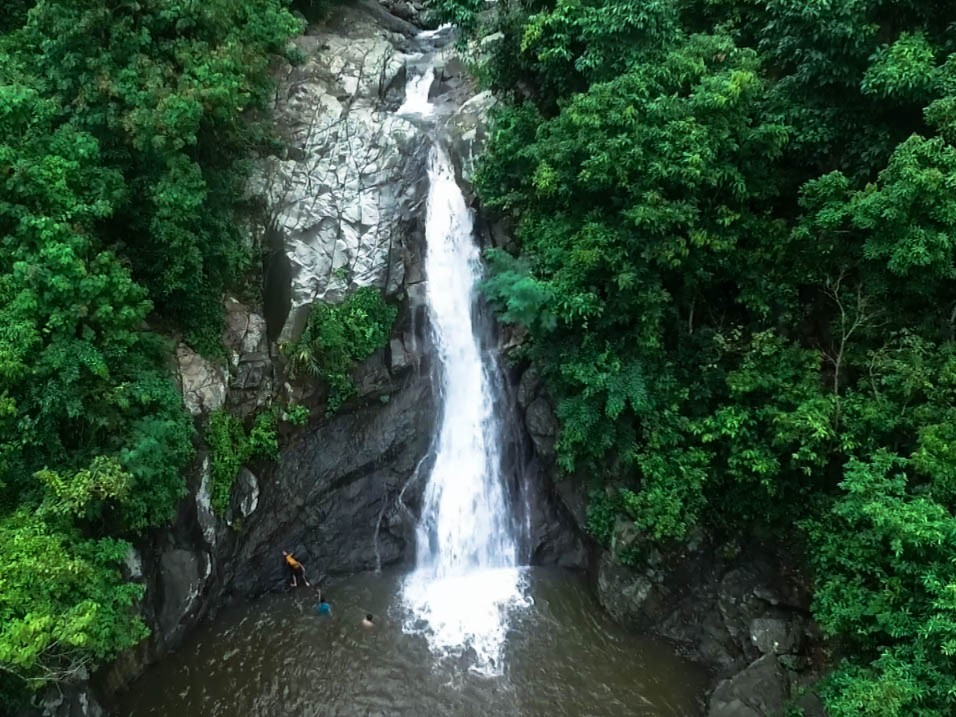

Maribina Falls

Maribina Falls is one of the most famous and accessible waterfalls in Catanduanes, with its refreshingly cold water and scenic view that will wash your worries away. Aside from its scenic view, you can create more memories with your loved ones, family or friends here in this place. Maribina Falls is a good place to swim, especially when summer season happens, because of its cold water. Plus, you can sit down on the rocks near the water and just savor the air and the beauty of Maribina Falls.
| Address | Opening Hours | Piece Range | Best Time to Visit |
|---|---|---|---|
| Marinawa / Binanuahan, Bato, East Catanduanes, Philippines | 7 AM - 6 PM | Php 30 (adults), Php 20 (children), Php 10 (Environmental Range) | Summer months, at morning time |